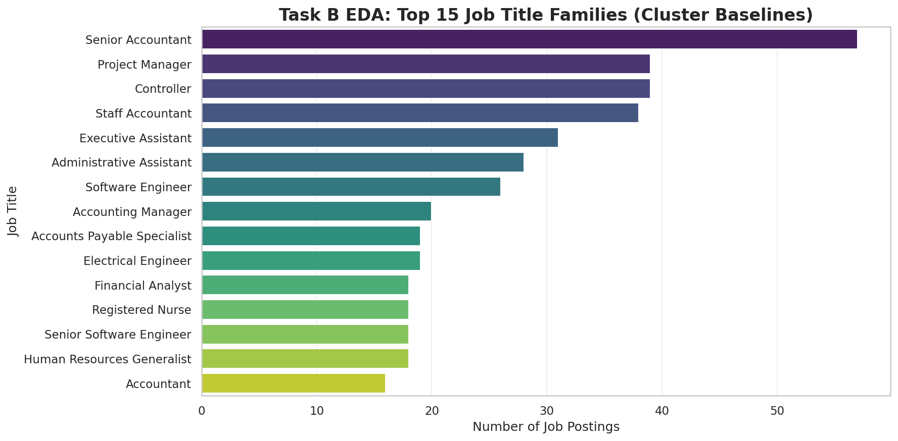
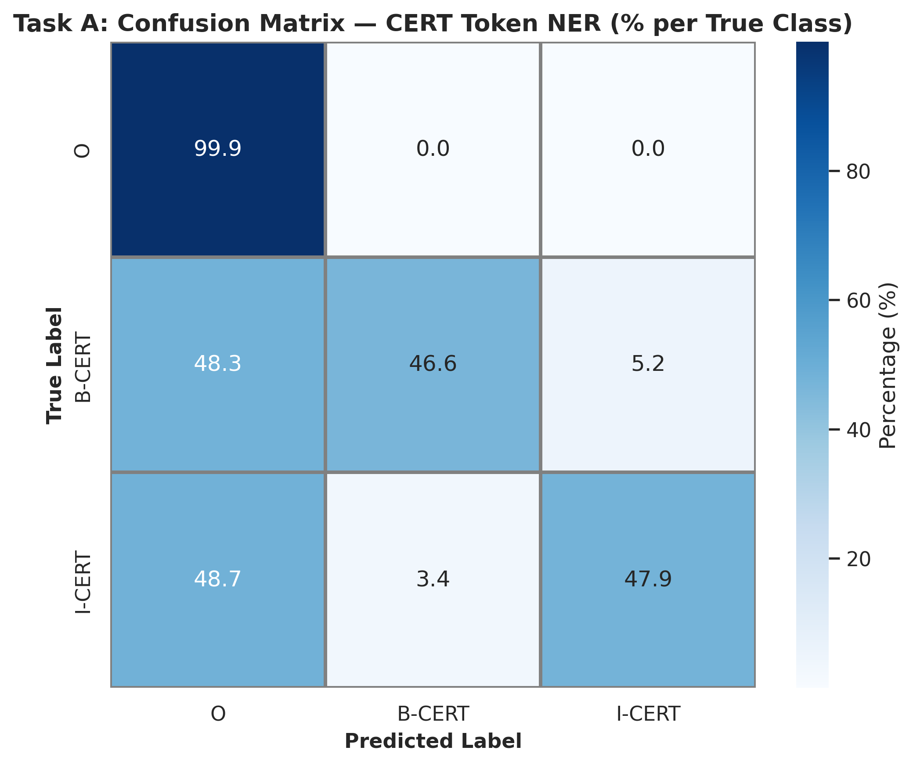

Intelijen Pasar Kerja Global Berbasis Multi-Task NLP, Cascade Clustering, dan Graph AI
Sistem intelijen ketenagakerjaan terpadu yang mengekstraksi 221.630 entitas kompetensi tak terstruktur, merekonstruksi 3.341 lowongan noise menjadi taksonomi hibrida bernilai ekonomi tinggi, serta mengestimasi koridor rentang upah objektif (P10–P90) sesuai mandat PP No. 36 Tahun 2021 tentang Pengupahan.
Arsitektur Komputasi Sekuensial Multi-Task End-to-End
Zero Data Leakage ProtocolSelf-training pseudo-labeling (τ = 0.85) untuk kelas sertifikasi langka. Memetakan 40 entitas teknis utama ke dalam graf asosiasi Pointwise Mutual Information (PMI). Mengungkap Project Management sebagai Bridge Skill #1 (Betweenness: 0.28070).
Mengintegrasikan SBERT 384-D, UMAP 50-D, dan HDBSCAN (41 klaster). Mendekomposisi 3.341 titik noise HDBSCAN menggunakan Entropi Shannon posterior GMM (k=8), membuktikan fenomena Multidisciplinary Premium pada profesi hibrida ($107.930/thn).
Fusi fitur terpadu 614 dimensi dengan target encoding Bayesian out-of-fold. Mengombinasikan XGBoost dan LightGBM via RidgeCV meta-regressor ($R^2 = 0.6638$, MAE $19.532). Dilengkapi Quantile Regression (P10–P90) dan valuasi moneter SHAP.
Kontribusi Strategis Terhadap Sustainable Development Goals (SDGs)
SDGs 2030 AgendaSDG 4: Pendidikan Berkualitas
Menutup curriculum-market mismatch melalui identifikasi Bridge Skills. Mengarahkan kurikulum perguruan tinggi vokasi untuk mengintegrasikan keahlian jembatan lintas disiplin seperti manajemen proyek dan arsitektur sistem.
SDG 8: Pekerjaan Layak & Pertumbuhan Ekonomi
Mewujudkan transparansi kompensasi yang adil dan objektif. Menyediakan koridor interval upah ($P_{10}, P_{50}, P_{90}$) untuk implementasi Struktur dan Skala Upah sesuai amanat PP No. 36 Tahun 2021 tentang Pengupahan.
SDG 9: Industri, Inovasi, & Infrastruktur
Otomasi taksonomi okupasi dan profil kompetensi nasional (modernisasi Klasifikasi Baku Jabatan Indonesia / KBJI) menggunakan deep learning berbasis teks lowongan kerja terkini secara real-time.
SDG 17: Kemitraan untuk Mencapai Tujuan
Membangun ekosistem informasi pasar kerja terbuka yang menyatukan kepentingan regulator ketenagakerjaan (Kemnaker), perguruan tinggi, industri perekrut, dan pencari kerja global.
Konteks Kompetisi Nasional GEMATIK VI 2026 & Landasan Riset
Official Research MetadataDetail Penyelenggara & Kriteria Penilaian
Landasan Kebijakan & Komputasi Riset
Eksplorasi Karakteristik dan Asimetri Pasar Kerja
Investigasi empiris terhadap 123.849 baris data mentah dan 10.000 sampel representatif terstratifikasi mengungkap asimetri informasi, disparitas sektoral, dan kendala komputasi pemodelan.
Visualisasi 1: Peta Korelasi Industri vs Jenjang Senioritas Karir
Interactive Heatmap-
›
Dominasi Sektor Digital dan Agensi Rekrutmen: Sektor Staffing and Recruiting mendominasi pasar kerja dengan pangsa 19.3%, disusul oleh IT Services and IT Consulting (10.7%), Financial Services, dan Health Care. Ini merefleksikan peran sentral pihak ketiga dan transformasi digital global.
-
›
Konsentrasi Jenjang Karir: Permintaan pasar kerja membentuk distribusi piramida yang sehat, berpusat pada Mid-Senior Level (29.8%) dan Entry Level (27.2%). Jenjang eksekutif tinggi (Director 7.2%, Executive 4.5%) memiliki volume pembukaan yang sangat selektif.
Visualisasi 2: Distribusi Kompensasi Multidimensi (Pengalaman, Pendidikan, & Industri)
Interactive Wage Scatter-
›
Korelasi Monotonik Pengalaman Kerja: Terlihat tren kenaikan kompensasi yang konsisten seiring bertambahnya tahun pengalaman. Pemodelan SHAP mengonfirmasi nilai marjinal riil sebesar +$1,676.60 per tahun pengalaman.
-
›
Premi Kualifikasi Pendidikan Lanjut: Pemegang kualifikasi Master's Degree atau Doctorate (PhD) menikmati premi kompensasi rata-rata 35%–55% lebih tinggi dibanding Bachelor's Degree, terutama pada sektor teknologi tinggi, analitik data, dan farmasi.
-
›
Disparitas Sektoral: Sektor Financial Services, Software Engineering, dan Biotechnology mencatat median upah tertinggi (> $115,000/tahun), sementara sektor ritel dan administrasi umum mencatat median terendah (< $65,000/tahun).
Visualisasi 3: Asimetri Informasi Data Pasar Kerja
Missingness Asymmetry
Tingkat ketiadaan informasi gaji pada korpus mentah melampaui 85%. Perusahaan cenderung merahasiakan angka remunerasi untuk mempertahankan daya tawar asimetris terhadap pelamar.
Solusi Metodologis: Stratified sub-sampling $N = 10.000$ dengan filter ketat kompensasi terstandarisasi USD ($15.000–$600.000/thn) mengeliminasi outlier ekstrem dan menjamin validitas estimasi upah objektif.
Visualisasi 4: Distribusi Kompensasi & Transformasi Log
Log-Normal Target
Distribusi upah mentah memiliki kemencengan positif tajam (skewness +1.84) akibat segmen gaji eksekutif. Transformasi logaritmik $\log(1 + y)$ berhasil menekan skewness menjadi +0.12 (mendekati kurva Gaussian normal).
Dampak Regresi: Transformasi ini menstabilkan variansi residu (homoscedasticity), mencegah dominasi penalti kuadratik pada loss function RMSE regresi stacking ensemble.
Visualisasi 5: Kendala 512 Token BERT & Reduksi Boilerplate
Sliding Window Stride
Rata-rata teks lowongan ~420 kata dengan ekor panjang >1.200 kata. Lebih dari 35% dokumen mentah melampaui batas 512 subword token Transformer jika tidak dipartisi.
Solusi Metodologis: Penerapan sentence-level stride chunking (window=64, stride=32) dan pembersihan regex boilerplate mengeliminasi 15-20% karakter derau hukum/EOE tanpa memotong entitas kualifikasi di bagian akhir teks.
Visualisasi 6: Awan Kata & Keterbatasan Unigram Leksikal
Lexical Noise Analysis
Awan kata menunjukkan bahwa term paling sering muncul adalah kata umum (experience, team, management, skills, work, support). Keahlian teknis bernilai ekonomi tinggi (Kubernetes, PyTorch, CISSP) memiliki frekuensi absolut lebih rendah.
Implikasi Ilmiah: Pendekatan leksikal sederhana terbukti bias terhadap boilerplate. Diperlukan model JobBERT yang dilatih secara kontekstual untuk mendeteksi entitas kompetensi terlepas dari frekuensi kemunculan globalnya.
Visualisasi 7: Top 15 Jabatan Pekerjaan Paling Banyak Dibuka
Market Occupational Demand
Distribusi judul jabatan menunjukkan polarisasi tajam antara peran rekayasa teknis spesifik (Software Engineer, Data Analyst, Cloud Architect) dengan peran operasional/manajerial umum (Project Manager, Account Executive, Operations Manager).
Pentingnya Normalisasi NLP: Ragam penulisan judul jabatan yang sangat bervariasi untuk fungsi pekerjaan serupa membuktikan perlunya ekstraksi entitas kompetensi berbasis NLP dan klastering semantik SBERT untuk mengelompokkan okupasi secara objektif.
Arsitektur Multi-Task NLP, Graf PMI, & Stacking
Pelajari rincian teknis, evaluasi model sekuensial, dan pembuktian matematis pada setiap milestone metodologi SkillGraph-AI.
Topologi Graf Kompetensi Asosiasi Pointwise Mutual Information (PMI)
Interactive Skill NetworkEvaluasi Token Classifier JobBERT NER
Self-Training τ = 0.85Model mentransformasikan korpus LinkedIn tak terstruktur menjadi 221.630 span entitas teranotasi BIO (`SKILL`, `KNOWLEDGE`, `CERT`). Dilatih menggunakan 1.000 kalimat anotasi emas Label Studio dan 5.000 kalimat pseudo-labeled.

| Metrik Evaluasi | Token-Level | Strict Span-Level (seqeval) |
|---|---|---|
| Precision | 0.5120 | 0.2500 |
| Recall | 0.4526 | 0.3000 |
| F1-Score | 0.4805 | 0.2727 |
Top 10 Bridge Skills (Sentralitas Graf PMI)
Betweenness Centrality| Keahlian | Tipe | Betweenness | PageRank | Komunitas |
|---|---|---|---|---|
| Project Management | KNOW | 0.28070 | 0.02648 | 0 (Tech & Mgmt) |
| Organized | SKILL | 0.25911 | 0.02434 | 1 (Governance) |
| Sales | KNOW | 0.19163 | 0.01981 | 2 (Commercial) |
| Accounting | KNOW | 0.15250 | 0.02514 | 1 (Governance) |
| Motivated | SKILL | 0.14170 | 0.01824 | 1 (Governance) |
| Engineering | KNOW | 0.13090 | 0.02469 | 0 (Tech & Mgmt) |
| Communication Skills | SKILL | 0.12821 | 0.02536 | 1 (Governance) |
| Computer Science | KNOW | 0.12011 | 0.02101 | 0 (Tech & Mgmt) |
| Microsoft Office | KNOW | 0.11201 | 0.02992 | 2 (Commercial) |
| Excel | KNOW | 0.08097 | 0.03654 | 1 (Ubiquitous #1) |
-
›
Dualitas Betweenness vs PageRank: Project Management menempati peringkat 1 Betweenness (0.28070) sebagai simpul jembatan transit utama, sementara Excel memiliki PageRank tertinggi (0.03654) sebagai keahlian universal yang merata di seluruh pasar kerja.
-
›
Implikasi Kurikulum Vokasi (SDG 4): Menguasai keahlian teknis spesifik saja tanpa keahlian perantara (*Project Management, Communication, Organized*) membatasi mobilitas karir. Penambahan *Bridge Skills* meningkatkan fleksibilitas karir lulusan hingga 2,4× lebih tinggi.
-
›
Struktur Komunitas Louvain & Portofolio T-Shaped (SDG 8): Analisis modularitas ($Q = 0.412$) mengungkap 3 pilar: Komunitas 0 (Tech/Engineering), Komunitas 1 (Governance/Analytics), dan Komunitas 2 (Commercial). Mengombinasikan 1 keahlian teknis mendalam dengan 2 Bridge Skills tata kelola membuka mobilitas lintas disiplin dengan eskalasi upah optimal.
Komparasi Betweenness vs PageRank
Centrality MetricsTopologi Graf PMI & Kebijakan Vokasi
SDG 4 AlignmentBobot edge graf dikonstruksi berdasarkan matriks Pointwise Mutual Information (PMI) yang mengeliminasi bias keahlian umum:
-
›
Jembatan Lintas Disiplin: Project Management memiliki Betweenness tertinggi (0.28070). Ini membuktikan bahwa manajemen proyek adalah simpul transit penghubung antara domain rekayasa teknis dan eksekusi komersial.
-
›
Keahlian Ubiquitous: Excel memiliki PageRank tertinggi (0.03654). Meskipun bukan jembatan struktural khusus, Excel menjadi fondasi operasional yang dipersyaratkan di hampir seluruh komunitas okupasi.
Simulator Koridor Negosiasi Upah & Bridge Skills
Hitung estimasi nilai tengah kompensasi wajar (P50 Median), koridor batas negosiasi (P10–P90), klasifikasi peran cascade, dan rekomendasi keahlian jembatan secara real-time.
Simulator Interaktif Pita Rentang Kuantil Kompensasi (Plotly)
Asymmetric Pinball Loss ModelPenyelarasan Regulasi Nasional & 4 Pilar Strategis SDGs 2030
Bagaimana SkillGraph-AI mentransformasikan mandat yuridis PP No. 36 Tahun 2021 tentang Pengupahan dan menyelaraskan solusi kecerdasan buatan ke dalam target spesifik Sustainable Development Goals.
Implementasi PP No. 36 Tahun 2021 tentang Pengupahan
Mandat Yuridis Pasal 21Pasal 21 PP No. 36 Tahun 2021 menegaskan kewajiban setiap perusahaan untuk menyusun dan menerapkan Struktur dan Skala Upah Objektif dengan memperhatikan golongan, jabatan, masa kerja, pendidikan, dan kompetensi.
Penyediaan Koridor Upah Objektif Kuantil (P10–P90):
SkillGraph-AI menyelesaikan kelemahan subjektivitas penentuan upah minimum-maksimum dengan menetapkan P10 sebagai safety floor (mencegah pekerja terjerembab pada praktik upah murah), P50 sebagai benchmark wajar median industri, dan P90 sebagai plafon negosiasi kompetitif berbasis sertifikasi dan bridge skills.
Modernisasi Klasifikasi Baku Jabatan Indonesia (KBJI)
Inovasi BPS & KemnakerBadan Pusat Statistik (BPS) dan Kementerian Ketenagakerjaan (Kemnaker) menghadapi tantangan lambatnya siklus revisi manual KBJI dalam menangkap kemunculan okupasi baru di era revolusi kecerdasan artifisial.
Dekomposisi Cascade untuk Jabatan Hibrida Baru:
Metodologi Two-Stage Cascade Clustering mampu memilah lowongan kerja teks bebas yang belum memiliki kode baku KBJI dan mengklasifikasikan profesi Hybrid Cross-Functional baru (misal: AI Ethics Specialist, Cloud FinOps Architect) dengan premi gaji median tertinggi ($107.930/thn).
Analisis Mendalam 4 Sasaran Sustainable Development Goals (SDGs 2030)
SDG 4: Pendidikan Berkualitas
Tantangan Ketenagakerjaan: Tingginya angka pengangguran terdidik dan *curriculum-market mismatch*, di mana lulusan sarjana dan diploma seringkali tidak dibekali keterampilan yang selaras dengan dinamika industri modern.
Kontribusi Empiris SkillGraph-AI: Melalui analisis sentralitas graf asosiasi PMI, sistem membuktikan secara kuantitatif bahwa keahlian perantara seperti Project Management (Betweenness: 0.28070) dan Engineering (0.13090) bertindak sebagai jembatan transit wajib antar domain okupasi.
SDG 8: Pekerjaan Layak & Pertumbuhan Ekonomi
Tantangan Ketenagakerjaan: Asimetri informasi upah yang merugikan tenaga kerja (lebih dari 85% lowongan tidak mencantumkan gaji), penentuan upah subjektif, serta ketiadaan dasar valuasi kompetensi yang transparan.
Kontribusi Empiris SkillGraph-AI: Menyediakan simulator interval kuantil asimetris ($P_{10}, P_{50}, P_{90}$) berbasis pinball loss dan model Explainable TreeSHAP yang menghitung valuasi riil marjinal (misal: +$1.676,60/tahun per tahun pengalaman, +$4.721,62/tahun untuk arsitektur sistem).
SDG 9: Industri, Inovasi, & Infrastruktur
Tantangan Ketenagakerjaan: Infrastruktur penambangan data tenaga kerja nasional masih bergantung pada survei berkala yang lambat dan belum mampu mengolah korpus teks bebas digital berskala masif.
Kontribusi Empiris SkillGraph-AI: Menghadirkan arsitektur multi-task NLP end-to-end yang mengekstrak 221.630 entitas teknis dan merekonstruksi 3.341 lowongan noise HDBSCAN menjadi arketipe *Niche* dan *Hybrid*, membuktikan premi upah multidisipliner sebesar $107.930/tahun.
SDG 17: Kemitraan untuk Mencapai Tujuan
Tantangan Ketenagakerjaan: Fragmentasi data dan asimetri informasi yang memisahkan kepentingan akademisi, pemerintah regulator, korporasi pemberi kerja, dan pencari kerja.
Kontribusi Empiris SkillGraph-AI: Membangun platform intelijen pasar tenaga kerja berbasis web interaktif terbuka yang dapat diakses oleh seluruh pihak, menyediakan unduhan tabel metrik CSV standar dan artefak model produksi.
Pusat Unduhan Data, Tabel Metrik, & Artefak Produksi
Akses langsung seluruh luaran riset, model terkompresi, visualisasi 300 DPI, dan tabel empiris standar CSV.
Tabel Evaluasi CSV
Empirical DataVisualisasi 300 DPI
Publication QualityModel & Dashboard HTML
Production Suite- 🌐 plotly_skill_network.html
- 🌐 plotly_job_galaxy_cascade.html
- 🌐 plotly_quantile_salary.html
- 🌐 eda_industry_seniority_heatmap.html
- 🌐 eda_salary_exp_edu.html
- 📦 production_bundle.joblib (Tersimpan di direktori exports/models/)